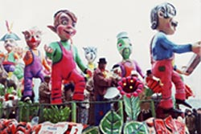
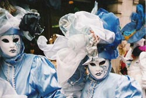

Vacanze a scelta
Attività 10 È tempo di carnevale!
Italy has a number of different annual festivals and events throughout the year. Some of them draw wide interest both at a national and international level.
Clicca qui to find out more about some well-known Feste, sagre e festival.
Feste, sagre e festival
The following are just a few examples of the vast array of feste, sagre e festival that are staged in the different regions of Italy. If you would like to find out more about them, visit the following websites.
| Carnevale di Venezia | www.carnevale.venezia.it |
| Carnevale di Viareggio | www.viareggio.ilcarnevale.com |
| Film Festival, Taormina, Sicily | http://sicilianfilmfestival.com |
| La Biennale, Venezia – International Arts Festival (includes the film festival) | www.labiennale.org/it/ |
| Festivalbar modern music festival per i giovani | www.festivalbar.it |
| Umbria Jazz, an internationally renowned jazz festival | www.umbriajazz.com |
| Il Palio di Siena (famous horse race) La città di Ferrara also has a Palio event on a lesser scale |
www.ilpalio.org www.paliodiferrara.it |
| La Festa del Calcio Storico in costume, Firenze | http://it.worldby.com/firenze/eventi/manifestazioni/ |
| La Notte Bianca is taking off as a summer event in many cities around Italy. Gli spettacoli, le manifestazioni e gli eventi in programma nella città nel giorno in cui le attività rimarranno aperte per tutta la notte. |
You can access information on this event by going to www.yahoo.it Search for La Notte Bianca. Different sites will come up dedicated to different cities. For example: www.lanottebianca.it – Roma www.nottebiancacomo.it – Como |
| Motor Show, Bologna | www.motorshow.it |
There are also many food festivals or sagre. Depending where and when you are in Italy, you may come across a range of them. A few examples are Sagra dell’Uva (grape), la Sagra del Pesce (fish), la Sagra del Fungo (mushroom), and la Sagra del Limone (lemon).
Whatever the purpose of the festival, most have a few common elements: parades, music, amusements and food.
The following attività is about parole e frasi related to agricultural shows clicca qui. Some of these words may also apply to feste, festival e sagre.
Select the Italian words from the list that match the following English words.
Write them in the space provided.
- le mostre di animali, le giostre, le parate,
- i giochi, le mostre automobilistiche, i sacchetti campionari,
- le mostre di animali, i trattori e gli attrezzi agricoli,
- la ruota panoramica, i fuochi d’artificio, le dimostrazioni culinarie,
- le sfilate di moda, lo zucchero filato,
- la degustazione di specialità gastronomiche, le esibizioni equestri
| rides | le giostre | |
| parades | le parate | |
| games | i giochi | |
| animal competitions | le mostre di animali | |
| show bags | i sacchetti campionari | |
| car displays | le mostre automobilistiche | |
| food tasting | la degustazione di specialità gastronomiche | |
| horse shows | le esibizioni equestri | |
| fireworks | i fuochi d’artificio | |
| cooking demonstrations | le dimostrazioni culinarie | |
| fashion parades | le sfilate di moda | |
| fairy floss | lo zucchero filato | |
| tractors and agricultural equipment | i trattori e gli attrezzi agricoli | |
| ferris wheel | la ruota panoramica |
È tempo di carnevale!
Il carnevale is a popular event in Italia. The most famous carnivals are staged in the cities of Viareggio and Venezia.
Listen to information about these two carnivals.
|  Courtesy of M. Calabro Please upgrade your flash player. You can get the latest version here: http://www.abobe.com/flashplayer/
|
 Courtesy of L. Tamburri Please upgrade your flash player. You can get the latest version here: http://www.abobe.com/flashplayer/
|
The following is a list of some of the features and the activities that you would experience at the two carnivals.
Which ones relate to Viareggio? Which ones relate to Venezia?
Select the ones that relate to the particular carnival and put them in the correct column.
| Courtesy of M. Calabro | Courtesy of L. Tamburri |
Il carnevale di Viareggio vs Il carnevale di Venezia
You and a friend are in Italy during the carnival season. You have both decided that the carnival experience is a must do and will be veramente la fine del mondo!
The information that you have heard about the Venezia and Viareggio carnivals have really convinced you of this. They both sound great and are obviously very popular tourist events.
Which carnevale will you choose to go to?
Select one of the following role play cards.
Role play cards
Student A – Il carnevale di Viareggio
You would like to experience the carnival atmosphere in Italy.
- You have heard that il carnevale di Viareggio è stupendo!!
- It’s exciting, there are so many attività in which you can participate.
- The night scene really allows you to get into carnival atmosphere and let your hair down in the various trendy disco and pub scenes for which Viareggio is famous.
- The city is located on the coast. You also have the opportunity di fare una passeggiata along one of the most famous corso italiano!
Even though it’s winter, you will get a chance to see this popular summer beach location.
Student B – Il carnevale di Venezia
You would like to experience the carnival atmosphere in Italy.
- You have heard that going to il carnevale di Venezia is a must!
- The atmosphere is magical and fascinating.
- The night parties are a unique experience.
- The atmosphere in the canals at night is haunting and mysterious.
- The carnival masks are abundant and the prices range to suit everyone’s taste and budget. They are a must buy souvenir.
- It will be great to experience Venezia at its peak tourist season.
Un consiglio intelligente!
Do some further research to get a better understanding of the event.
Task
Take part in a conversation with your friend.
Convince him/her why you would like to go to the carnival that you have chosen. Explain the reasons for your preference.
Remember that your friend will also be trying to convince you to go to the other carnival. Be prepared to sell the aspects of your carnival. You may need to use a lot of comparative and superlative adjectives to achieve this outcome!
Go to Elementi linguistici.
The following language points will be very useful in this conversation.Tocca te!
You have become good friends with a young Italian who is spending some time in your city. You would like to invite the person to experience an Australian event such as the Sky show, Races or any other interesting youth event.
Research what events are on during the period when the person is here.
Select an event that interests you.
Don’t forget to consider the other person’s interests as well.
Make notes in English of the details of the event.
| Details of event | |
|---|---|
| Attraction | |
| Date | |
| Place | |
| Cost | |
| Bookings | |
| Transport |
Write a message to your Italian friend inviting him/her to the event. Provide the necessary details.
Scrivi in italiano.
To view some e-cartoline that you can use to write your message, go to www.cartoline.ch
Select Catalogo.
Select Viaggi (or la categoria that is best suited to the event that you are discussing).
You may wish to select one of the e-cartoline to write your message.
To help you with this attività, clicca qui to view an example. Read Marta’s experience at La Notte Bianca event that she has posted on a forum site.